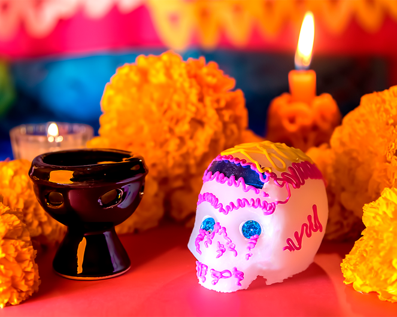
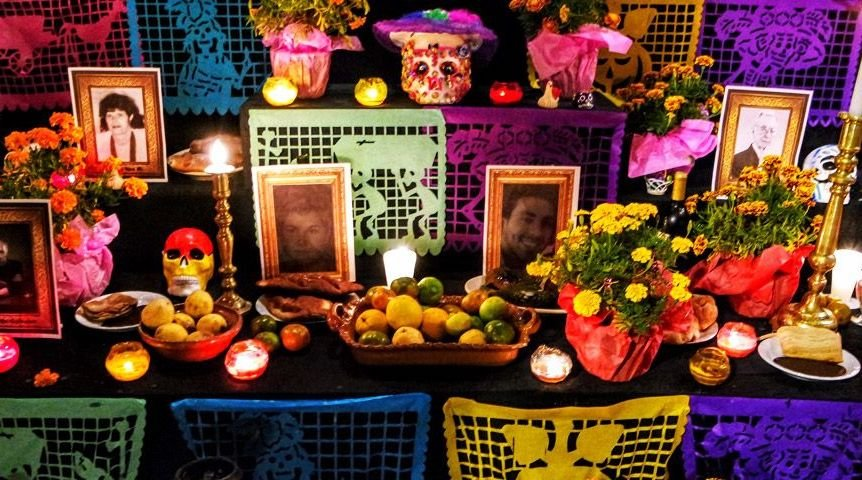

Festividad de día de muertos
El día de muertos es la hermosa tradición mexicana donde honramos y recordamos a nuestros seres queridos que ya no están con nosotros. Una celebración a la memoria, donde se da el privilegio a la evocación y no al olvido. Se celebra el 1 y 2 de noviembre. Esta es una fecha que se celebra principalmente en México, acompañada de muchísimas tradiciones que no pueden faltar en estas fechas, como las famosas calaveras literarias (demostrando el humorismo de nuestra gente), calaveritas de azúcar, dulces, pan de muerto, flores de cempasúchil y, cómo no, las ofrendas.
Imagenes de día de muertos
La ofrenda
La ofrenda es lo más importante de estos días, es un altar donde se coloca la comida favorita de los difuntos, vasos de agua, azúcar, sal, papel picado, fruta, incienso o copal (para limpiar el ambiente), pan de muerto y todo lo que le gustaba, como su bebida favorita o dulces; todo colocado junto al retrato de nuestros seres queridos que están en el más allá, rodeados de veladoras y caminos con la flor de cempasúchil; estos caminos de flor son los que facilitan que las almas regresen a la tierra, iluminados gracias a las veladoras que se coloquen, para que no se pierdan en su viaje. Los retratos son importantes, ya que esto sugiere que el alma de la persona vendrá el 2 de noviembre a visitarnos; si son niños vienen el 1 de noviembre. Desde épocas indígenas esta celebración tenía un gran significado, ya que las llevaban a cabo para que su familiar difunto pudiera pasar al Mictlán; también, claro está, colocaban su comida favorita, ya que se creía que podría darles hambre en su camino. Al día de hoy, el día de muertos es una combinación entre la celebración de los rituales religiosos católicos traídos por los españoles y la conmemoración que llevaban a cabo los indígenas.
Video de día de muertos
Aquí les dejo un video de nuestra tradición mexicana y de más información de este día festivo, que es el día 2 de noviembre
Un gozo, una fiesta para recordar y seguir celebrando su presencia
Hay que recordar que es un día para celebrar, en México creemos que podemos estar juntos con nuestra familia una vez más, donde se coloca el altar es donde el alma de nuestros familiares nos visitan; muchas familias se reúnen en los cementerios para estar con los que se han adelantado. Hay comida, bebida y reuniones con amigos y familiares. En este año es recomendable evitar las aglomeraciones debido a la covid – 19. Esto no significa que se deba suspender una fecha tan importante, más bien podemos dedicarle más tiempo al altar en casa, se puede convivir con los niños explicándoles la raíz de nuestra tradición, podemos contar anécdotas sobre nuestros difuntos y reunirnos con los que estén en casa, pasando un momento agradable junto a ellos.